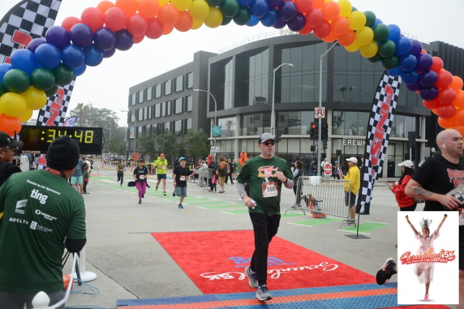
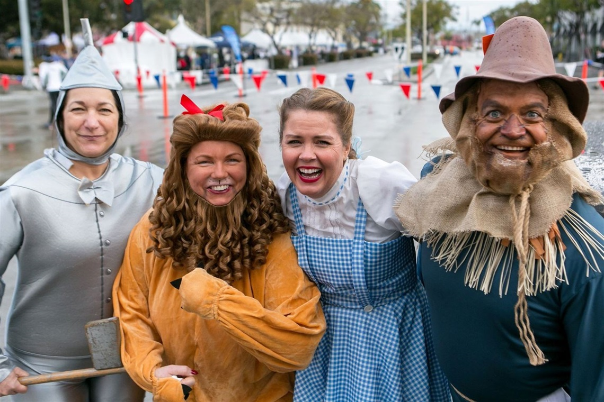
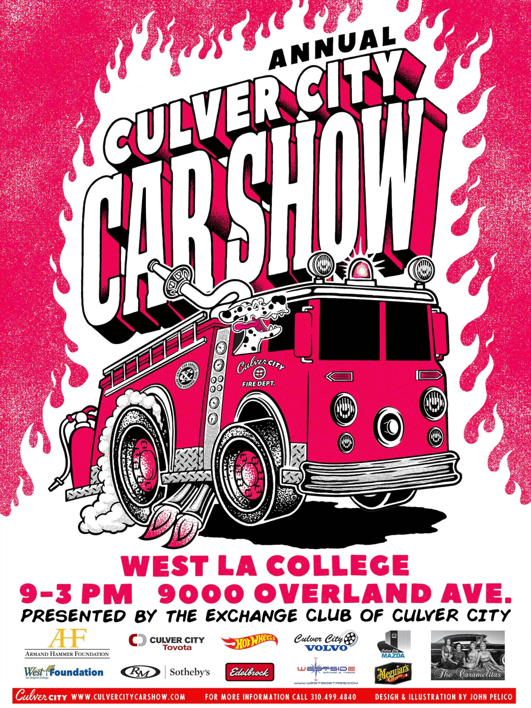
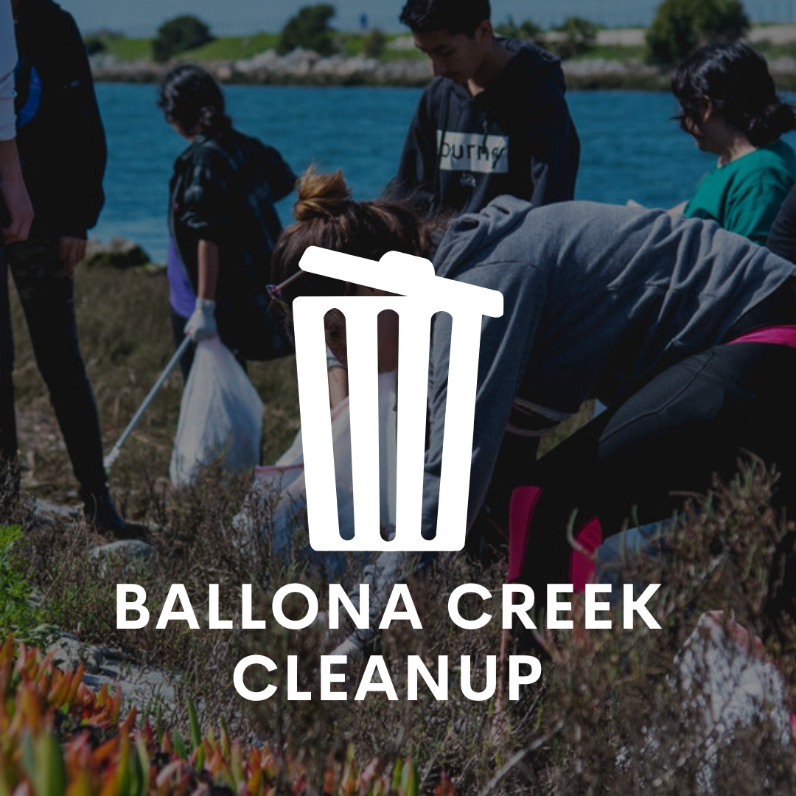
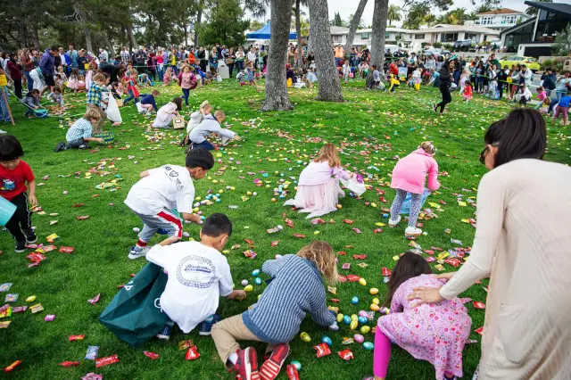
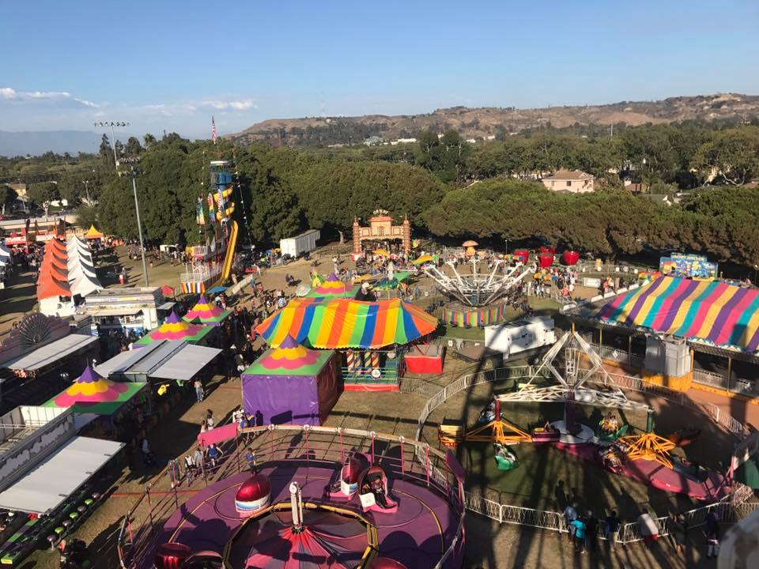
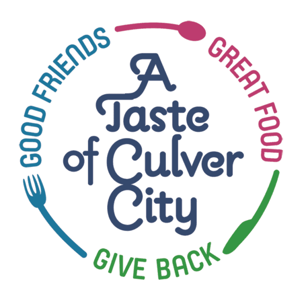

- Home
- Events & Festivals
Events & Festivals







Annual & Special Events
- Screenland 5k The center of the event is a 5K run/walk, on the same day as the Academy Awards, with the course running through “The Heart of Screenland”. Includes an awards ceremony, “Munchkin Dash” (ages 12 & under), an expo area with various food and gear vendors, and stages with live entertainment.
- Spring Egg Hunt In partnership with the Culver City Kiwanis Club, the annual event is held the third Saturday in March at Veterans Park, 4117 Overland Ave on the main field. The hunt is for ages walking to 10 years old. In addition to the egg hunt, there will be fun family activities, including arts & crafts, games and a photo booth with Mr. Bunny. Don't forget your baskets.
- George Barris Culver City Car Show In May, George Barris, car customizer extraordinaire, creator of many great vehicles from the Movies & TV, displays some of his great creations alongside great classic cars & hot rods from all across California!
- Culver City Education Foundation - A Taste of Culver City Fundraising event CCUSE programs and resources, will also promote Culver City businesses. Includes tasting booths from 20 -30 local restaurants, beer & wine garden, student performances, and other interactive activities.
- Fiesta La Ballona In August, the Fiesta La Ballona, "Festival of the People", is a weekend festival celebrating Culver City in Veteran's Park with food, entertainment and amusement rides.
- Ballona Creek Cleanup Each September, Culver City Public Works Environmental Programs and Operations and local community support participate in the Annual Coastal Cleanup Day on the Ballona Creek bike path.
- Culver City Arts District Art Walk and Roll Festival The festival features local artists, vendors, live music, food trucks, beer gardens, and kid’s activities. Attendees are encouraged to visit established art galleries with special installations and a pop-up marketplace featuring arts and crafts vendors.
- Culver City Film Festival The Culver City Film Festival brings together a diverse group of film makers to share recent work and recognize local talent in a city celebrated for it's cinematic history and cultural depth.
- Downtown Culver City Holiday Tree Lighting Celebration Celebrate peace, good will and the holiday season at this annual event. See Santa Claus as he makes a very special visit, all the way from the North Pole! Downtown Culver City businesses provide the hot cider, hot cocoa, cookies and other festive treats that are sure to make everyone feel merry. Enjoy performances by local choirs, as well as appearances by the Mayor and city council members.
- *All information is from Culver City Annual & Special Events*
.jpeg)


.jpeg)